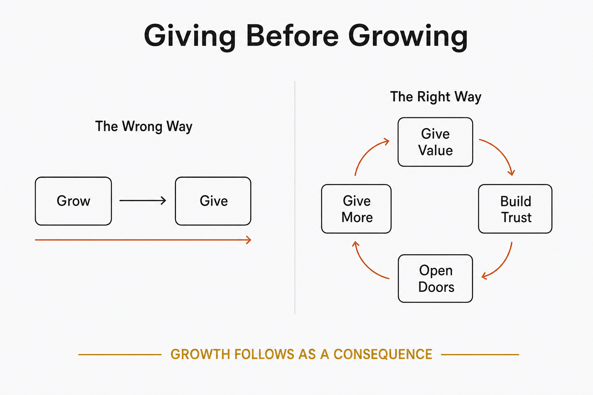

Living principles
Give value first; the growth follows as a consequence, not a condition.

Most growth strategies run the arrow the wrong way: grow first, then — once you're big enough — give something back. Giving before growing flips it. You put real value into the world before you've earned anything from it, and you let the growth arrive as a by-product rather than a precondition. This isn't charity and it isn't a tactic dressed up as generosity — the moment the giving is calculated to extract, people feel it and it stops working. It's a stance: help because it's useful, publish what you know, answer the question fully, and trust that being genuinely useful is what compounds. The mechanism is a reinforcing loop — value given builds trust, trust opens doors, and the doors let you give more. Give first, and the growing tends to take care of itself.